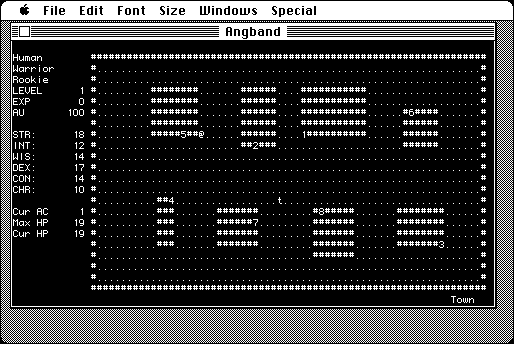

Download
angband-305-mac-old.zip (524K) Angband (Old) 3.0.5 repackaged into a zipped hfs disk image and checksum file. The disk image can be mounted with Mini vMac.
angband-305-mac-old.sea.hqx (803K) Angband (Old) 3.0.5 in the original format.
copyright: Robert Ruehlmann (current maintainer) and others
mod date: Aug 22, 2004
license: GPL
official url :
Angband Releases: 3.0.5 - rephial.org
Dungeon adventure game, with text based graphics, ported to many platforms.
This "Minimal version for 68k Macs" no longer seems to be on the current web site. It is an “Old version for 68000+ without sound or graphics. Requires Plus or greater, Finder 6.0/System 4.2 or greater, 2 Megabyte or more RAM.”

Download source code
angband-3.0.5-src.tar.gz (1.5M) Angband 3.0.5 main source in the original format.
extra-3.0.4-mac.sit.bin (954K) Angband 3.0.5 extra Mac bits source in the original format.
If you find these downloads useful, please consider helping the Gryphel Project, which hosts them.
Here are the md5 checksums for the downloads, signed with Gryphel Key 5:
--------- GRY SIGNED TEXT --------- 2df6f7bf050f751cf276a22a67c87c85 angband-305-mac-old.zip f26cdc3f83146d3750ed7961366ab27f angband-305-mac-old.sea.hqx cc61e55baf4ffdcf9bfc6caa14935ec0 angband-3.0.5-src.tar.gz dce61064d66c7fe7d333172ff13d0d03 extra-3.0.4-mac.sit.bin ------- BEGIN GRY SIGNATURE ------- Gry/4Xa8CFcUzxdN/OvFGQpEqFgbmC8Uth2f334gZkS3Eiw2YWCriFa9WCQCS/Hf Slpe1Dw057z0yZq0VM9f2jopmocaR7o94yQAqbq45CrosElmDa1UKkNEq6tPmhZJ C5pRKQKpifQf3aP/5QA8VykjdmEMVn8aL8lqC2nRiPLPzV9vTR3g1ozBhjSWIYDd -------- END GRY SIGNATURE --------